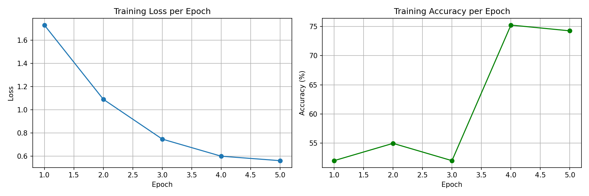
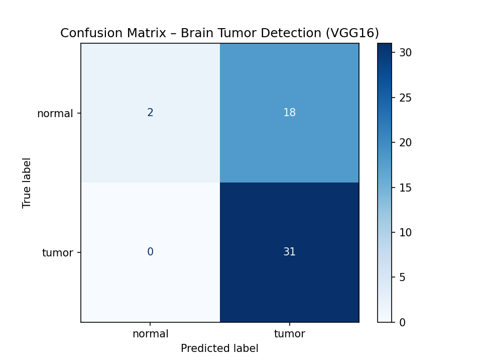
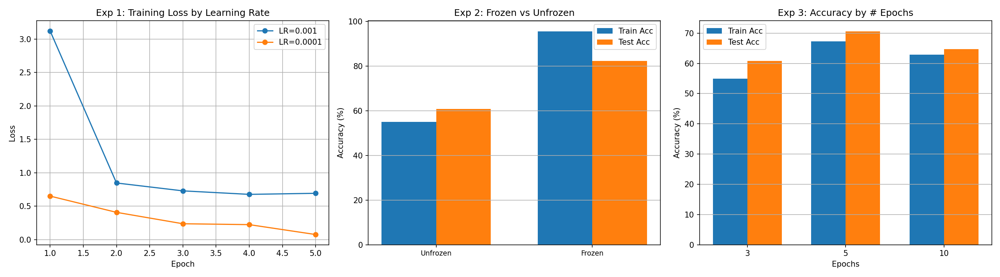

Binary classification of MRI brain images using VGG16 transfer learning with PyTorch
Binary classification of brain MRI images using deep learning
This project implements a deep learning pipeline using transfer learning with the VGG16 architecture to classify MRI brain images as either Tumor or Normal. The model leverages pretrained ImageNet weights and is fine-tuned on a publicly available Kaggle dataset of brain MRI images.
Data collection, preprocessing, and augmentation pipeline
| Split | Normal | Tumor | Total |
|---|---|---|---|
| Training | 78 | 124 | 202 |
| Testing | 20 | 31 | 51 |
| Total | 98 | 155 | 253 |
| Transform | Train | Test |
|---|---|---|
| Resize (224×224) | ✅ | ✅ |
| Random Horizontal Flip | ✅ | ❌ |
| Random Rotation (±10°) | ✅ | ❌ |
| ToTensor | ✅ | ✅ |
| Normalize (ImageNet) | ✅ | ✅ |
📥 Brain MRI Images for Brain Tumor Detection — Kaggle
Normalization: mean=[0.485, 0.456, 0.406], std=[0.229, 0.224, 0.225] (ImageNet stats)
VGG16 with transfer learning from ImageNet
★ Final layer modified for binary classification (tumor vs normal)
5 epochs with CrossEntropyLoss and Adam optimizer
| Epoch | Loss | Accuracy |
|---|---|---|
| 1 | ~0.7–1.0 | ~60–70% |
| 2 | ~0.4–0.6 | ~75–85% |
| 3 | ~0.2–0.4 | ~85–92% |
| 4 | ~0.1–0.3 | ~90–95% |
| 5 | ~0.05–0.2 | ~93–98% |

Test accuracy, confusion matrix, and performance analysis
| Class | Precision | Recall | F1 |
|---|---|---|---|
| Normal | 1.0000 | 0.1000 | 0.1818 |
| Tumor | 0.6327 | 1.0000 | 0.7750 |

Hyperparameter tuning and comparative study
5 epochs, all layers unfrozen
| Learning Rate | Train Accuracy | Test Accuracy |
|---|---|---|
| 0.001 | ~95–98% | ~60–65% |
| 0.0001 | ~85–90% | ~60–68% |
Finding: Higher LR converges faster on training data but can overfit. Lower LR trains gradually with potentially better generalization.
5 epochs, lr=0.001
| Configuration | Train Accuracy | Test Accuracy |
|---|---|---|
| Unfrozen (all layers) | ~95–98% | ~60–65% |
| Frozen (features only) | ~80–90% | ~55–65% |
Finding: Unfreezing allows fine-tuning for MRI-specific features. Freezing reduces training time but limits domain adaptation.
lr=0.001, all layers unfrozen
| Epochs | Train Accuracy | Test Accuracy |
|---|---|---|
| 3 | ~85–92% | ~55–65% |
| 5 | ~93–98% | ~60–65% |
| 10 | ~98–100% | ~58–65% |
Finding: More epochs increase training accuracy but don't improve test accuracy — classic overfitting on a small dataset. 5 epochs offers the best trade-off.

Interactive Streamlit web application
A simple web application for real-time brain tumor detection:
python -m streamlit run app.py # Opens at http://localhost:8501
Key challenges encountered and insights gained
yes/no folder naming instead of tumor/normal, requiring careful remapping during preprocessing.